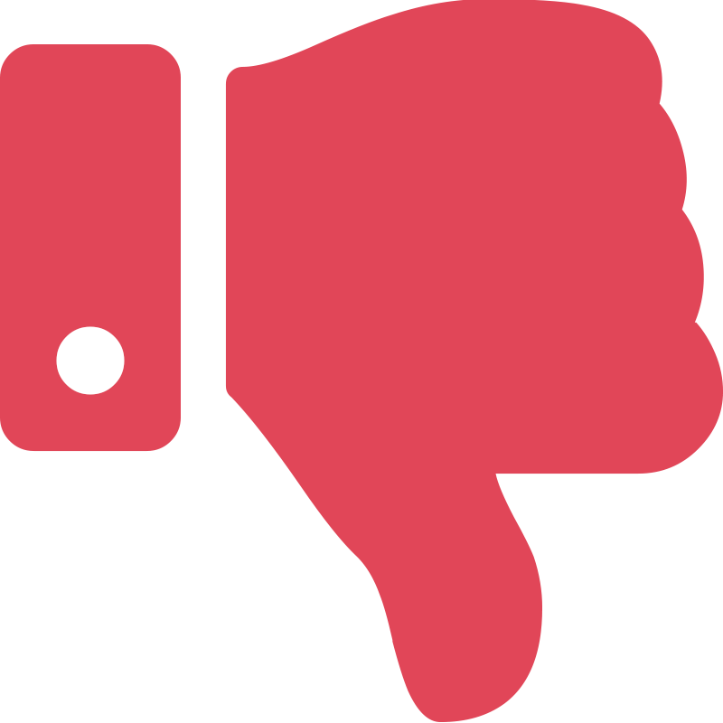

42%
found page
was not engaging
Pamela Simpson has owned and operated her own beauty salon in south Orange County for over thirty years. She rents a room or space inside other salons, and provides haircuts and coloring to over one hundred clients. In 2017, she decided that she wanted to grow her business in profit, size, and reputation. To do this, she wanted to update her company’s branding, raise her prices, expand her digital presence, and possibly move into her own salon space sometime in the future.
I’ve been getting my hair cut by Pamela for almost 5 years. To build up my UX portfolio, I’ve been on the lookout for opportunities to gain experience doing UX. When Pamela told me about her plans to expand her business, I offered to help her design and develop a website using user-centered techniques. She loved the idea, so now, in exchange for free haircuts, I have become her UX guru and web developer. We’ve gone through several rounds of iteration for both her business plans and plans for her website. The following case study outlines the process we undertook during the original iteration…
To begin, I interviewed Pamela, the client. I wanted to know more details about her business’ needs and goals, and to learn more about her vision for her website. We discussed success metrics for her website, as well as challenges and opportunities that the project could present. Three important findings stood out to me during this interview:

Next, I conducted a competitor analysis, to get an idea of what works and what doesn’t work on current hair salon websites. During the analysis, I took note of specific features, content, strengths, and weaknesses of four different websites for hair salons in Laguna Beach.
Overall, the weaknesses of each website outweighed the strengths. The two smaller salons, Studio Taka and International Hair Salon, had websites that were outdated and neglected. On these, it was difficult to find important information, like photos of the salon or the stylists’ work or the menu of services. The larger salons, Vogue and Serandi, had better websites, although they both seemed to focus more on flashy animation than good user experience. For example, hese websites failed to use the navigation to help orient users, and often the graphics obscured important text and photos.

*Note: If I were going to do this competitor analysis again, there are a few things that I would change…
Firstly, I would modify the criteria that I used to find competitors. In this exercise, I selected competitors based only on two factors: Did they have a website? Were they located nearby Pamela’s salon? However, I have since realized that these two criteria were not sufficient to correctly distinguish Pamela’s competitors. Pamela’s salon is somewhat unique in her industry; she operates alone and in a small location, provides extraordinary and personalized customer service, and specializes in blonde hair coloring and highlights. The Vogue and Serandi salons, while located in Laguna Beach, are larger than Pamela’s salon, and provide a significantly different experience to clients. Comparing Pamela’s salon to these two is rather like comparing apples to oranges. Going forward, I would look for competitors who matched Pamela’s salon in location, size, and specialty.
Additionally, I would not use the same format for a competitor analysis again. To compare each salon website, I took notes in four main categories. Unfortunately, these categories were large and left room for interpretation, so the notes I took within each category did not always compare directly from website to website. The notes were also lengthy, and difficult to digest quickly. Next time, I would construct an analysis chart that has smaller and more distinct categories. I would also include a way to help readers understand the information quickly, perhaps by using colors to represent success or failure, or simple “grades” for each website for each category.
To avoid making assumptions about what was wrong (and right) with my current case study design, I conducted user interviews and testing. Unfortunately, I had limited resources to gather testers, so I had to do some “guerrila” testing. I conducted three 30-minute interviews, and had 12 people take a series of six simple user tests. Both my time and money was limited, so I had to find family and friends to participate in this round of testing. However, the insights they gave me showed me to ways in which I could improve the usability of the site for all users, UX hiring managers and recruiters included.
42%
found page
was not engaging
>1 min
avg. time
to find a keyword
33%
unable to understand
at a glance
Testing results showed me that almost half of users were uninterested in the content of my case study, and a third had difficulties understanding the purpose of the page. It took testers an average of over one minute to find evidence of key words and concepts that a hiring manager or recruiter would surely be looking for, such as “prototype”, my role in the project, whether I worked with a team, and whether I learned anything from the project. These statistics certainly demonstrated that I had neglected to design around my target users.
While my user tests uncovered several major issues, they did not reveal why the issues existed. To find out, for example, why users were uninterested in the page, I needed to do some interviews. During my three interviews, two quotes especially stood out to me:
“After reading the first paragraph, I don’t want to keep reading. I can see that the page is really long, but I have no idea what’s coming next. It just feels overwhelming.”
“I can’t find anything - there’s so much text and it’s so small. I’d have to read this whole thing from beginning to end to find out whether you worked with a team.”
With the results of my user testing and interviews in mind, I proceeded to redesign my case study. I started with skectches, then gathered my best ideas into a wireframe of the page. From there, I created a high-fidelity prototype. Throughout this process, I integrated the findings from my user testing into my design choices: